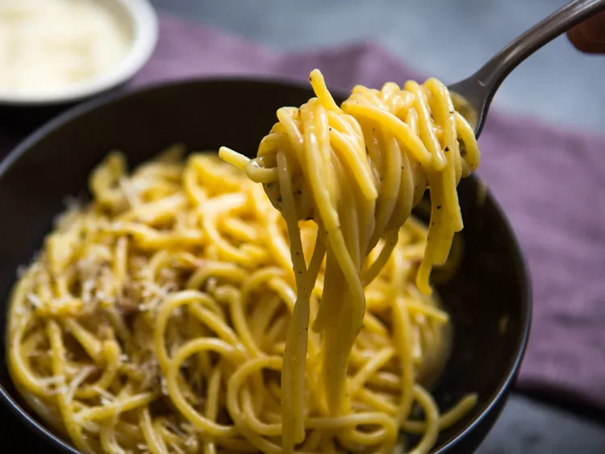

Carbonara Spaghetti
From: Serious Eats

Ingredients
- Kosher salt (see notes)
- 1 pound (450g) dried spaghetti (see notes)
- 1/2 cup diced guanciale, pancetta, or bacon (about 3 ounces; 85g) (see notes)
- 3 tablespoons (45ml) extra-virgin olive oil, divided
- 2 whole large eggs plus 6 yolks
- 1/4 cup grated Pecorino Romano (about 1 ounce; 25g), plus more for serving
- 1/4 cup grated Parmigiano-Reggiano (about 1 ounce; 25g), plus more for serving
- 1 teaspoon freshly ground black pepper (ground medium-coarse), plus more for serving
Instructions
- Bring a pot of salted water to a boil. Add pasta and cook, stirring, until al dente.
- Meanwhile, combine guanciale (or pancetta or bacon) with 2 tablespoons (30ml) olive oil in a large skillet and cook, stirring frequently, over medium heat, until fat has rendered and guanciale is crisp, about 7 minutes.
- In a large, metal heatproof mixing bowl, whisk together whole eggs and yolks, Pecorino Romano, Parmigiano-Reggiano, and black pepper.
- Using tongs and/or a strainer, transfer pasta to skillet with crisped guanciale and its fat; be sure not to drain boiling pasta water. Add remaining 1 tablespoon (15ml) olive oil to pasta and stir to combine; let cool slightly. Scrape pasta, pork, and all the fat into the egg mixture. Measure 1/2 cup (120ml) pasta-cooking water and add to pasta and egg mixture. Stir well to combine.
- Set mixing bowl over pot of boiling pasta water (make sure bottom of bowl does not touch the water) and cook, stirring quickly with tongs, until sauce thickens to a creamy, silky consistency and leaves trails as you stir. Remove from heat, season with salt if needed, and divide into bowls. Serve right away, topping with more grated cheese and freshly ground pepper as desired.